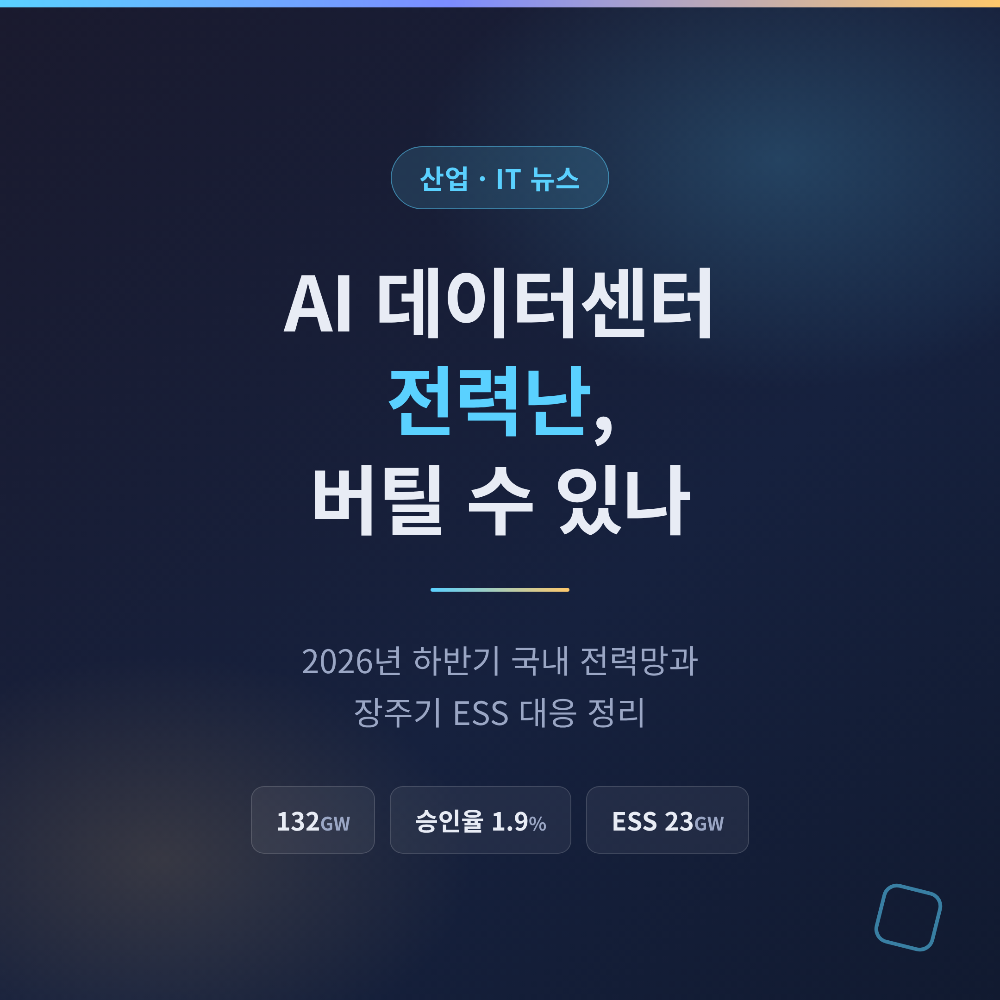
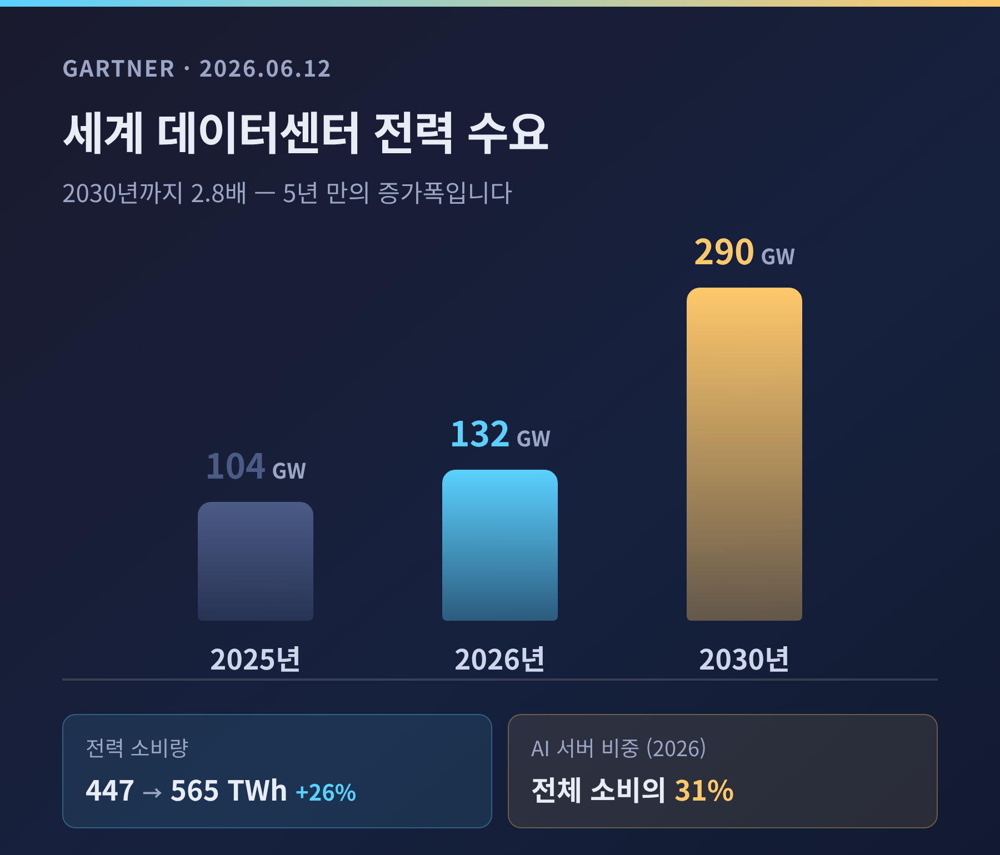
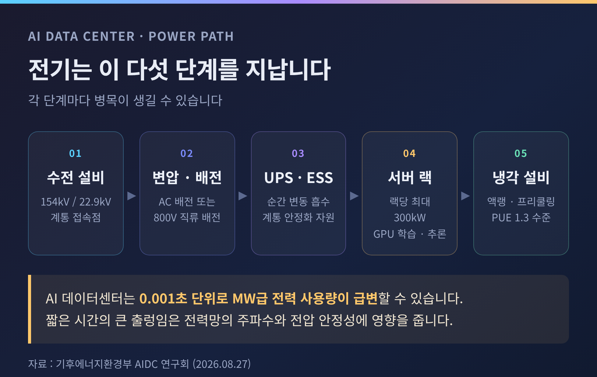
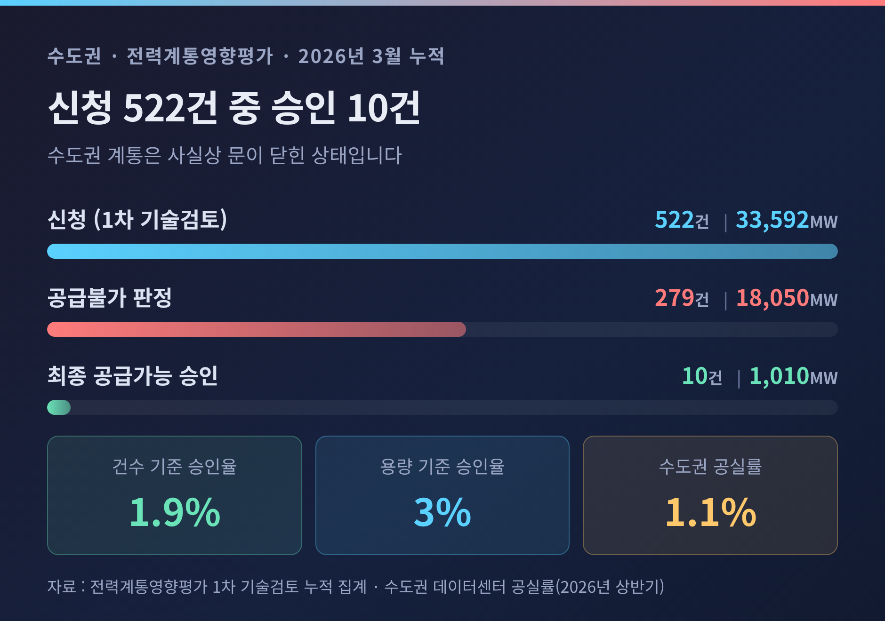
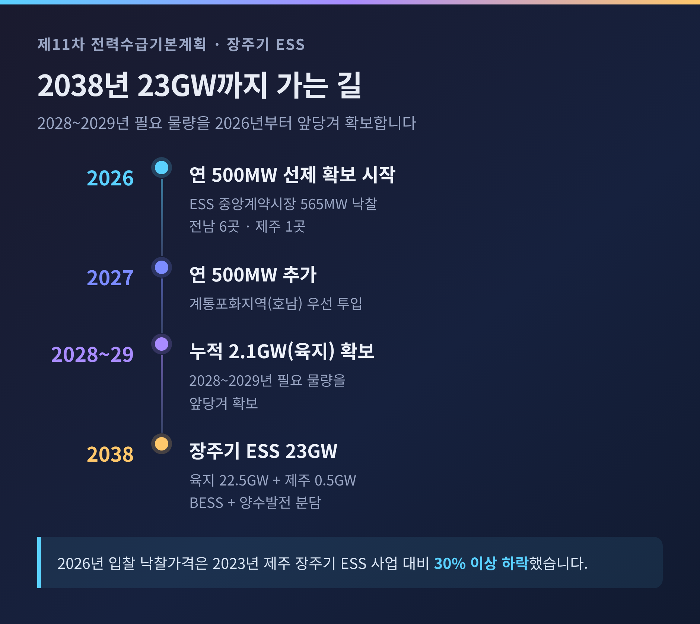
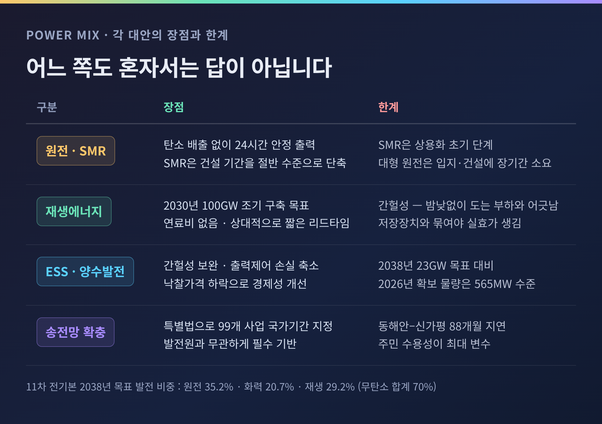
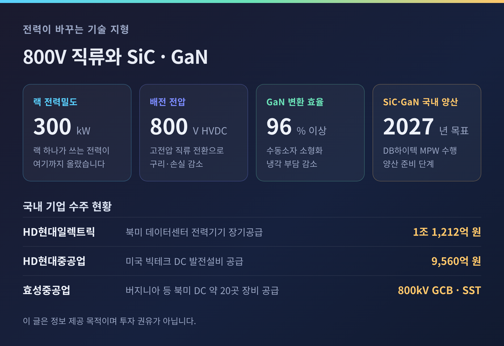

AI 데이터센터 전력난, 2026년 국내 전력망과 ESS는 버틸 수 있나

이번 글에서는 AI 경쟁의 병목이 반도체에서 전력으로 옮겨간 상황을 정리해 보겠습니다. 세계 데이터센터 전력 소비가 1년 만에 26% 늘었고, 국내에서는 수도권 계통이 사실상 문을 닫았습니다. 2026년 8월까지 확인된 수치와 정부 대응을 차례로 짚겠습니다.

세 줄 요약
- 세계 데이터센터 전력 소비는 2025년 447TWh에서 2026년 565TWh로 26% 늘어납니다. 전력 수요 용량은 104GW에서 132GW로 증가하고, 2030년에는 290GW에 이를 전망입니다.
- 국내 수도권은 이미 포화 상태입니다. 2026년 3월 누적 기준 전력계통영향평가 신청 522건 가운데 최종 승인은 10건, 승인율 1.9%에 그쳤습니다.
- 정부는 AI 데이터센터 전용 그리드코드를 연내 마련하고, 지역별 차등 전기요금제를 하반기부터 도입합니다. 장주기 ESS는 2038년까지 23GW 확보가 목표입니다.
가트너가 내놓은 숫자부터 봅니다
2026년 6월 12일 가트너가 발표한 전망이 이번 이슈의 출발점입니다.
세계 데이터센터 전력 소비량은 2025년 447테라와트시(TWh)에서 2026년 565TWh로 늘어납니다. 증가율 26%입니다. 전력 수요 용량 기준으로는 104기가와트(GW)에서 132GW로 27% 증가합니다. 2030년에는 290GW, 소비량으로는 1,200TWh를 넘어설 것으로 예상됐습니다.
증가분의 주범은 명확합니다. AI 최적화 서버입니다. 2026년 기준 데이터센터 전력 소비의 31%를 AI 서버가 차지하고, 2027년에는 기존 서버 소비량을 추월할 것으로 가트너는 내다봤습니다.
링란 왕 가트너 수석 애널리스트의 진단은 간명합니다. "AI 역량이 이제 전력 가용성에 의해 제약을 받게 됐다"는 것입니다.
2년 전의 경고가 지금 현실이 됐습니다
이 대목에서 자주 인용되는 발언이 있습니다. 마크 저커버그 메타 CEO의 "GPU 가뭄은 끝났다"는 말입니다.
다만 시점을 정확히 해둘 필요가 있습니다. 이 발언은 2026년이 아니라 2024년 5월에 나왔습니다. 팟캐스트 인터뷰에서 그는 "장기간 지속된 GPU 가뭄이 기본적으로 끝났고, 앞으로는 에너지 제약이 IT 산업의 다음 병목이 될 것"이라고 말했습니다. "기업들은 데이터센터에 큰돈을 쓰고 싶어지겠지만, 자본에 앞서 에너지 제약에 먼저 부딪힐 것"이라는 설명도 덧붙였습니다.
당시 그가 제시한 규모감은 이랬습니다. 일반 데이터센터 50~100MW, 대규모는 150MW. 앞으로 300~500MW, 나아가 GW급을 요구하는 것은 시간문제라고 봤습니다.
2년이 지났습니다. 기후에너지환경부는 2026년 8월 27일 문서에서 "하이퍼스케일 데이터센터의 필요 전력 규모는 GW급에 달한다"고 명시했습니다. 전망이 정책 문서의 전제가 된 셈입니다.
AI 데이터센터가 전력망에 유독 부담스러운 이유
단순히 많이 쓰는 것만 문제가 아닙니다. 쓰는 방식이 다릅니다.
기후에너지환경부는 2026년 8월 27일 서울 서초구 한강홍수통제소에서 이호현 제2차관 주재로 'AI 데이터센터(AIDC) 연구회' 첫 회의를 열었습니다. 여기서 공개된 기술적 설명이 핵심을 짚습니다.
AI 데이터센터는 GPU 학습과 추론 과정에서 0.001초(ms) 단위로 MW급 전력 사용량이 급변할 수 있습니다. 짧은 시간에 대규모 수요가 출렁이면 전력망의 주파수와 전압 안정성이 흔들립니다.
예전의 데이터센터는 완만하고 예측 가능한 부하였습니다. 지금의 AI 데이터센터는 밀리초 단위로 요동치는 부하입니다. 같은 MW라도 계통 입장에서는 전혀 다른 손님인 셈입니다.

수도권 승인율 1.9%라는 숫자
국내 사정은 이미 한계에 닿아 있습니다.
2026년 3월 누적 기준, 수도권 데이터센터의 전력계통영향평가 1차 기술검토 신청은 522건, 33,592MW였습니다. 이 가운데 279건, 18,050MW가 공급불가 판정을 받았습니다. 최종 공급가능 승인은 10건, 1,010MW입니다. 건수로 1.9%, 용량으로 3%입니다.
다른 집계도 크게 다르지 않습니다. 2024년 8월부터 2025년 6월까지 수도권 신청 195건 중 승인은 4건, 2.1%였습니다. 두 통계 모두 승인율이 2% 안팎이라는 점에서 일치합니다.
그런데도 수요는 계속 수도권으로 향합니다. 국내 데이터센터 165개 중 약 60%가 수도권에 있고, 2029년까지 필요한 신규 데이터센터 732개 가운데 601개, 82%가 수도권 집중을 예고하고 있습니다. 2026년 상반기 수도권 데이터센터 공실률은 1.1%까지 떨어졌습니다. 빈자리가 없다는 뜻입니다.
한국전력에 접수된 데이터센터 계약전력 신청량은 2020년 이전 60MW 수준에서 2023년 3,091MW로 3년 만에 50배 이상 뛰었습니다. 2030년까지 공급을 희망하는 신규 데이터센터 150건의 합산 필요 전력은 9.36GW입니다. 현재 운영 중인 전체 데이터센터 수전용량 1,986MW의 약 4.7배입니다.

18.4GW, 그리고 다시 짜는 12차 전기본
수요 쪽 압력은 오히려 더 커졌습니다.
정부는 2026년 6월 29일 '대한민국 대도약 3대 메가프로젝트'를 공식화했습니다. 2035년까지 AI 데이터센터 18.4GW를 호남·영남·충청·강원 등에 구축하고, 서남권 반도체 클러스터에 6.3GW 규모 팹 4기를 짓겠다는 구상입니다. 2035년까지 투입할 재원은 550조 원으로 제시됐습니다. 삼성전자와 SK하이닉스가 호남에 메모리 생산시설을, SK와 GS, 네이버가 울산과 동해, 세종 등에 대규모 데이터센터를 짓는 그림입니다.
문제는 규모입니다. 18.4GW와 6.3GW를 합치면 원전 24기 이상의 발전용량입니다. 현재 국내에서 가동 중인 원전 26기와 맞먹습니다.
이 발표로 제12차 전력수급기본계획이 흔들렸습니다. 초안 단계의 데이터센터 추가 수요는 4GW였습니다. 이것이 18.4GW로 늘면서 수요 전망 자체를 다시 추계해야 하는 상황이 됐습니다. 2026년 8월 20일 전력수요토론회가 열렸지만, 개최 6일 전에야 공지돼 절차의 졸속성을 지적하는 목소리도 나왔습니다. 12차 전기본의 연내 수립이 미뤄질 가능성도 제기됩니다.
시각은 갈립니다. 정부와 산업계는 선제적 전력 확보 없이는 투자 자체가 불가능하다고 봅니다. 반면 녹색연합은 "전력수요 과대 추정은 탄소배출을 늘릴 뿐"이라는 성명을 냈고, 일부 매체는 수요가 불분명한 상태에서 2035년까지 9배 확장하는 계획이 갈등의 씨앗이 될 수 있다고 지적했습니다. 아직 어느 쪽이 옳다고 단정하기는 이릅니다.
정부가 꺼낸 세 장의 카드
2026년 하반기 들어 정부 대응은 세 갈래로 정리됩니다.
첫째, 그리드코드입니다. 기후에너지환경부는 데이터센터가 전력망에 접속해 안정적으로 전력을 공급받기 위해 갖춰야 할 기술적 최소 요건을 연내 마련하기로 했습니다. 데이터센터가 이미 보유한 ESS와 UPS를 본래 기능을 해치지 않는 범위에서 계통 안정화 자원으로 활용하는 방안도 함께 검토합니다. 설비 구성과 수요 유형을 세분화하고 전력사용효율(PUE)도 분석 대상에 넣었습니다.
둘째, 가격 신호입니다. 8월 4일 청와대 영빈관에서 있었던 하반기 업무보고에 담긴 내용입니다. 지역별 차등 전기요금제를 2026년 하반기부터 도입하고, 초거대 AI 데이터센터 전기요금 체계를 개편하며, AI 데이터센터 전용요금제를 연내 도입합니다. 송전선로 이용비용과 전력 자립도, 국가균형발전을 반영해 산업용 요금을 지역별로 다르게 매기겠다는 것입니다. 목적은 분명합니다. 계통 여유가 있는 비수도권으로 입지를 유도하는 것입니다.
셋째, 저장장치입니다. 제11차 전력수급기본계획은 2038년까지 장주기 ESS 23GW가 필요하다고 산출했습니다. 육지 22.5GW, 제주 0.5GW입니다. 건설 기간을 고려해 BESS 등 저장장치와 양수발전으로 나눠 확보합니다. 특히 2028~2029년에 필요한 육지 2.1GW는 2026년부터 연 500MW씩 2029년까지 선제 확보해, 호남 등 계통포화지역에 우선 투입할 방침입니다.
실제 진척도 있습니다. ESS 중앙계약시장에서는 육지 500MW와 제주 40MW를 공고해 육지 525MW, 제주 40MW 등 총 565MW가 낙찰됐습니다. 8개 컨소시엄이 참여했고 전남 6곳, 제주 1곳에 설비가 들어섭니다. 낙찰가격은 2023년 제주 사업 당시와 비교해 30% 이상 떨어졌습니다.
여기에 송전망이 받쳐줘야 합니다. 국가기간 전력망 확충 특별법이 2025년 9월 26일 시행되면서 99개 송전선로·변전소가 국가기간 사업으로 지정됐습니다. 다만 현실은 녹록지 않습니다. 동해안–신가평 HVDC는 88개월, 북당진–신탕정 송전선로는 137개월 지연됐습니다. 대한상의 추산으로 동해안–수도권 송전망 지연 비용은 하루 약 14억 8천만 원, 연간 5,402억 원에 이릅니다.

발전원 논쟁 — 어느 쪽도 혼자서는 답이 아닙니다
전력을 무엇으로 채울 것인가. 여기서 의견이 크게 갈립니다. 각 대안의 장점과 한계를 함께 놓고 보는 편이 정확합니다.
원전과 SMR은 탄소 배출 없이 24시간 안정적인 기저 출력을 냅니다. AI 데이터센터의 상시 고부하 특성과 궁합이 맞는다는 평가를 받습니다. 소형모듈원자로(SMR)는 전기출력 300MW 이하 규모로, 주요 부품을 공장에서 제작해 현장에서 조립하기 때문에 건설 기간을 대형 원전의 절반 수준으로 줄일 수 있습니다. 한계도 분명합니다. SMR은 아직 상용화 초기 단계입니다. 대형 원전은 입지 선정과 건설에 오랜 시간이 걸립니다.
재생에너지는 반대편에 있습니다. 정부는 2030년까지 재생에너지 100GW 조기 구축을 목표로 내걸었고, 11차 전기본상 2038년 재생에너지 발전 비중 목표는 29.2%입니다. 연료비가 들지 않고 건설 리드타임도 상대적으로 짧습니다. 다만 간헐성이라는 약점을 피하기 어렵습니다. 해가 뜨고 바람이 불 때만 발전하는데, AI 데이터센터는 밤낮없이 돌아가야 합니다. 전력이 몇 초만 흔들려도 손실이 발생합니다.
그래서 저장장치가 중간에 놓입니다. ESS와 양수발전은 재생에너지의 간헐성을 메우고 계통 포화 지역의 출력제어 손실을 줄입니다. 낙찰가격이 내려가면서 경제성도 개선되는 중입니다. 하지만 23GW라는 목표에 비하면 2026년 확보 물량 565MW는 아직 출발선에 가깝습니다.
참고로 11차 전기본의 2038년 목표 발전 비중은 원전 35.2%, 화력 20.7%, 재생에너지 29.2%이며, 무탄소 발전 합계는 70%입니다. 어느 한 발전원이 독주하는 구성이 아닙니다.

전력이 바꾸는 기술 지형 — 800V와 SiC·GaN
전력 병목은 장비 시장의 지형도 바꾸고 있습니다.
랙 단위 전력밀도가 300kW 수준을 향해 올라가면서, 업계는 랙까지 400V 혹은 800V 고전압 직류(HVDC)를 직접 끌어오는 방향으로 움직입니다. 구리 사용량이 줄고 전력 경로가 단순해지며 도체 손실이 작아지기 때문입니다. 엔비디아가 차세대 AI 팩토리 플랫폼에 800VDC 아키텍처를 채택하면서 이 흐름은 더 빨라졌습니다.
고전압으로 가면 실리콘만으로는 버겁습니다. 탄화규소(SiC)와 질화갈륨(GaN) 같은 와이드밴드갭 반도체가 등장하는 지점입니다. 이들은 더 높은 스위칭 주파수와 더 낮은 손실, 더 높은 동작 온도를 견딥니다. 결과적으로 전력밀도가 올라가고 커패시터·인덕터 같은 수동소자가 작아지며 냉각 부담도 줄어듭니다. GaN 기반 솔루션은 전력변환 효율을 96% 이상으로 끌어올립니다. ST마이크로는 데이터센터 전력전달 보드에서 12kW 연속 전달과 98% 초과 효율을 구현했다고 밝혔습니다.
국내 기업들도 이 시장에 들어와 있습니다. DB하이텍은 2025년 12월 SiC·GaN 공정 기반 멀티프로젝트웨이퍼를 수행했고 2027년 양산을 목표로 하고 있습니다. HD현대일렉트릭은 글로벌 빅테크와 최대 1조 1,212억 원 규모의 북미 데이터센터 전력기기 장기공급계약을 맺었습니다. 배전기기 5,539억 원, 전력기기 5,673억 원으로 2028년까지 납품합니다. HD현대중공업은 미국 빅테크 데이터센터에 9,560억 원 규모 발전설비를 공급합니다. 효성중공업은 800kV 7000A 가스절연차단기와 반도체 변압기(SST)를 앞세우고 있으며, 미국 자회사 HICO가 버지니아 등 북미 데이터센터 약 20곳에 초고압 변압기와 개폐장치를 공급하고 있습니다.

앞으로 무엇을 지켜봐야 하는가
세 가지 일정이 남았습니다.
첫째, 12차 전력수급기본계획의 최종 수요 전망입니다. 18.4GW라는 숫자가 그대로 반영될지, 조정될지가 이후 발전소와 송전망 계획을 모두 규정합니다. 연내 수립이 미뤄질 가능성도 함께 봐야 합니다.
둘째, 그리드코드와 AI 데이터센터 전용요금제의 구체적 내용입니다. 기술 요건이 얼마나 엄격해지느냐에 따라 사업자의 초기 투자 부담이 달라집니다. 요금 차등 폭이 작으면 비수도권 유인 효과도 제한적일 것입니다.
셋째, 송전망 건설 속도입니다. 특별법으로 99개 사업이 지정됐지만, 88개월과 137개월이라는 지연 기록이 말해주듯 주민 수용성이 여전히 최대 변수로 남아 있습니다.
가트너의 권고도 함께 기억할 만합니다. 공급을 늘리는 것만이 답은 아니라는 것입니다. 고효율 냉각 시스템과 엣지 컴퓨팅에 대한 투자를 병행해야 한다고 했습니다. 실제로 국내에서도 고효율 냉방과 프리쿨링, 실시간 에너지 모니터링을 적용해 PUE 1.3 수준을 달성한 사례가 나오고 있습니다.
정리하면 이렇습니다.
지난 몇 해 AI 경쟁의 승패는 반도체 확보 능력에 달려 있었습니다. 2026년의 승패는 전기를 어디서, 언제, 얼마나 안정적으로 끌어올 수 있느냐로 옮겨가는 중입니다. 칩은 주문하면 언젠가 오지만, 전선과 변전소는 주문한다고 오지 않습니다.
"연산은 살 수 있어도, 계통은 살 수 없습니다."
승인율 1.9%라는 숫자는 기술의 문제가 아니라 시간과 합의의 문제입니다. 그리고 그 합의는 지금부터 시작해도 결코 이르지 않습니다.
이 글은 정보 제공을 목적으로 작성됐으며, 특정 종목에 대한 투자 권유가 아닙니다. 투자 판단과 그 결과에 대한 책임은 투자자 본인에게 있습니다.
본문의 수치와 사실관계는 2026년 8월 28일까지 공개된 자료를 기준으로 합니다.